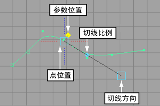
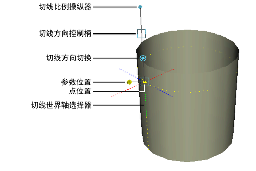

在曲线或曲面上移动 CV
- 选择“移动工具”(Move tool)。
- 在曲线或曲面上单击鼠标右键，然后选择“控制顶点”(Control Vertex)。
- 选择要编辑的 CV，然后使用操纵器移动它们。
提示： 选定一个 CV 后，可以按向上键和向下键选择行中的上一个/下一个 CV。在曲面上，按鼠标左键和鼠标右键可以选择列中的上一个/下一个 CV。
注： 避免在有历史记录的对象上进行调整（移动 CV）。如果对有历史记录的对象进行调整，调整将应用于特定的组件 ID。后续更改对象历史时，将导致组件 ID 更改，从而改变调整的效果。
例如，如果旋转曲线来创建曲面，然后调整曲面中编号为 3 的 CV，则所做调整将始终应用于编号为 3 的 CV。如果稍后更改旋转节点属性，以减少曲面中的分段数，则已调整的 CV 现在将具有新编号，且调整不再应用于该 CV。调整将应用于现在编号为 3 的 CV，而该 CV 可能位于曲面上的不同位置。
使用“曲线编辑工具”(Curve Editing tool)重新定形曲线
- 选择“曲线 > 编辑曲线工具”(Curves > Edit Curve Tool)。
- 单击曲线。

- 请执行下列任一操作：
- 拖动参数位置控制柄，沿曲线移动操纵器。
- 拖动点位置控制柄移动该点。曲线将重新定形，从而在移动时通过点。
- 拖动切线方向控制柄，更改该点的曲线方向。
- 拖动切线比例控制柄，更改该点的曲线“速度”。
- 单击虚线将该点处的切线与其中一个轴对齐。
使用“曲面编辑工具”(Surface Editing tool)重新定形曲面
- 选择。
- 单击曲面。

- 请执行下列任一操作：
- 拖动参数位置控制柄，跨曲面移动操纵器。
- 拖动点位置控制柄移动该点。曲面将重新定形，从而在移动时接触到点。
- 单击切线方向切换柄（双圆），在编辑“U”、“V”和“法线”(Normal)切线之间切换。
- 拖动切线方向控制柄（方框），更改该点的曲面切线。
- 拖动切线比例控制柄，更改该点的切线“速度”。
- 单击虚线将该点处的切线与其中一个轴对齐。
提示： “曲面编辑工具”(Surface Editing Tool)可以将操纵器的两个跨度内的区域变形。变形随着与工具位置之间的距离增加而减弱。
您可以使用状态行中的“捕捉到曲线”(Snap to curves)选项将操纵器捕捉到等参线，或使用“捕捉到栅格”(Snap to grids)将操纵器捕捉到面片角点。发生捕捉的是使用显示对象时显示的等参线或面片角点，而不是仅使用更精细的“平滑度”(Smoothness)设置显示的等参线或面片角点。
若要使用软修改工具重新定形曲线或曲面，请参见下列主题：